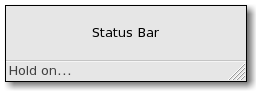

| GTK+ Reference Manual |
|---|
GtkStatusbarGtkStatusbar — Report messages of minor importance to the user |  |
#include <gtk/gtk.h>
GtkStatusbar;
GtkWidget* gtk_statusbar_new (void);
guint gtk_statusbar_get_context_id (GtkStatusbar *statusbar,
const gchar *context_description);
guint gtk_statusbar_push (GtkStatusbar *statusbar,
guint context_id,
const gchar *text);
void gtk_statusbar_pop (GtkStatusbar *statusbar,
guint context_id);
void gtk_statusbar_remove (GtkStatusbar *statusbar,
guint context_id,
guint message_id);
void gtk_statusbar_set_has_resize_grip
(GtkStatusbar *statusbar,
gboolean setting);
gboolean gtk_statusbar_get_has_resize_grip
(GtkStatusbar *statusbar);
GObject +----GtkObject +----GtkWidget +----GtkContainer +----GtkBox +----GtkHBox +----GtkStatusbar
"text-popped" void user_function (GtkStatusbar *statusbar, guint context_id, gchar *text, gpointer user_data); "text-pushed" void user_function (GtkStatusbar *statusbar, guint context_id, gchar *text, gpointer user_data);
A GtkStatusbar is usually placed along the bottom of an application's main GtkWindow. It may provide a regular commentary of the application's status (as is usually the case in a web browser, for example), or may be used to simply output a message when the status changes, (when an upload is complete in an FTP client, for example). It may also have a resize grip (a triangular area in the lower right corner) which can be clicked on to resize the window containing the statusbar.
Status bars in Gtk+ maintain a stack of messages. The message at the top of the each bar's stack is the one that will currently be displayed.
Any messages added to a statusbar's stack must specify a context_id that is used to uniquely identify the source of a message. This context_id can be generated by gtk_statusbar_get_context_id(), given a message and the statusbar that it will be added to. Note that messages are stored in a stack, and when choosing which message to display, the stack structure is adhered to, regardless of the context identifier of a message.
Status bars are created using gtk_statusbar_new().
Messages are added to the bar's stack with gtk_statusbar_push().
The message at the top of the stack can be removed using gtk_statusbar_pop(). A message can be removed from anywhere in the stack if its message_id was recorded at the time it was added. This is done using gtk_statusbar_remove().
typedef struct _GtkStatusbar GtkStatusbar;
Contains private data that should be modified with the functions described below.
GtkWidget* gtk_statusbar_new (void);
Creates a new GtkStatusbar ready for messages.
| Returns : | the new GtkStatusbar. |
guint gtk_statusbar_get_context_id (GtkStatusbar *statusbar, const gchar *context_description);
Returns a new context identifier, given a description of the actual context.
| statusbar : | a GtkStatusbar. |
| context_description : | textual description of what context the new message is being used in. |
| Returns : | an integer id. |
guint gtk_statusbar_push (GtkStatusbar *statusbar, guint context_id, const gchar *text);
Pushes a new message onto a statusbar's stack.
| statusbar : | a GtkStatusbar. |
| context_id : | the message's context id, as returned by gtk_statusbar_get_context_id(). |
| text : | the message to add to the statusbar. |
| Returns : | the message's new message id for use with gtk_statusbar_remove(). |
void gtk_statusbar_pop (GtkStatusbar *statusbar, guint context_id);
Removes the message at the top of a GtkStatusBar's stack.
| statusbar : | a GtkStatusBar. |
| context_id : | a context identifier. |
void gtk_statusbar_remove (GtkStatusbar *statusbar, guint context_id, guint message_id);
Forces the removal of a message from a statusbar's stack. The exact context_id and message_id must be specified.
| statusbar : | a GtkStatusBar. |
| context_id : | a context identifier. |
| message_id : | a message identifier, as returned by gtk_statusbar_push(). |
void gtk_statusbar_set_has_resize_grip
(GtkStatusbar *statusbar,
gboolean setting);Sets whether the statusbar has a resize grip. TRUE by default.
| statusbar : | a GtkStatusBar. |
| setting : | TRUE to have a resize grip. |
gboolean gtk_statusbar_get_has_resize_grip (GtkStatusbar *statusbar);
Returns whether the statusbar has a resize grip.
| statusbar : | a GtkStatusBar. |
| Returns : | TRUE if the statusbar has a resize grip. |
"has-resize-grip" gboolean : Read / Write
Whether the statusbar has a grip for resizing the toplevel window.
Default value: TRUE
Since 2.4
"shadow-type" GtkShadowType : Read
Style of bevel around the statusbar text.
Default value: GTK_SHADOW_IN
void user_function (GtkStatusbar *statusbar, guint context_id, gchar *text, gpointer user_data);
Is emitted whenever a new message is popped off a statusbar's stack.
| statusbar : | the object which received the signal. |
| context_id : | the context id of the relevant message/statusbar. |
| text : | the message that was just popped. |
| user_data : | user data set when the signal handler was connected. |
void user_function (GtkStatusbar *statusbar, guint context_id, gchar *text, gpointer user_data);
Is emitted whenever a new message gets pushed onto a statusbar's stack.
| statusbar : | the object which received the signal. |
| context_id : | the context id of the relevant message/statusbar. |
| text : | the message that was pushed. |
| user_data : | user data set when the signal handler was connected. |
| << GtkProgressBar | Buttons and Toggles >> |